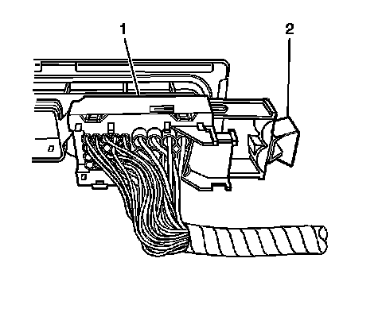
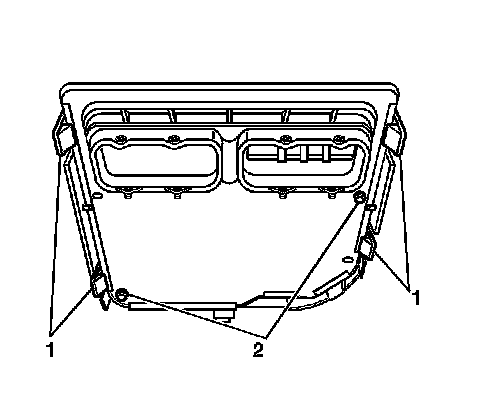

5L40-E/5L50-E - Automatic Transmission
Transmission Control Module Replacement
Removal Procedure

1. Unlock the transmission control module (TCM) electrical connector by pulling the retainer (2) away from the electrical connector (1).
Important: Twisting or tilting of the TCM electrical connector while disconnecting may result in bent or misaligned electrical terminal pins.
2. Carefully disconnect the electrical connector (1) from the TCM.

3. Remove the TCM from the mounting bracket by pulling back on the retaining tabs (1) to release the control module .
Installation Procedure
1. Align the TCM with the locating pins (2) on the module mounting bracket.
2. Install the TCM by seating it fully into the bracket until all of the retaining tabs (1) have engaged the edge of the module edge.
Important: Twisting or tilting of the TCM electrical connector while connecting may result in bent or misaligned electrical terminal pins.
3. Carefully connect the TCM electrical connector (1) to the TCM.
4. Lock the TCM electrical connector securely to the TCM by pushing the retainer (2) toward the electrical connector (1) until fully seated.
5. A replacement TCM must be programmed with the proper software/calibrations. Refer to Control Module References (Programming and Relearning) .
Important: It is recommended that transmission adaptive pressure (TAP) information be reset.
Resetting the TAP values using a scan tool will erase all learned values in all cells. As a result, the engine control module (ECM), powertrain control module (PCM) or TCM will need to relearn TAP values. Transmission performance may be affected as new TAP values are learned.
6. Reset the TAP values. Refer to Transmission Adaptive Functions (Transmission Adaptive Functions) .